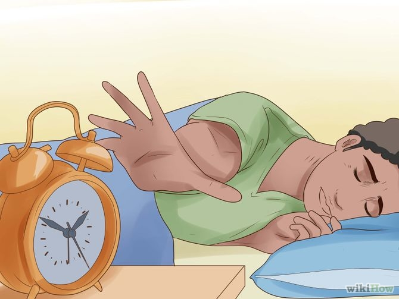
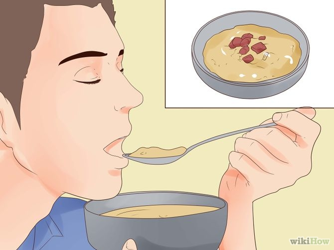

Keep the snooze button out of reach.
Waking up and falling back asleep can trigger the start of a whole new wave of sleep hormones.[1] Don't rely on your selfish morning persona not to hit the snooze button. Move your alarm clock so you have to get out of bed to turn it off, the first time you hear it.Wake up to the right type of light.
Our brain expects us to get up in the early morning, bathed in bright, bluish light. If this is roughly the time you wake up, keep the curtains open so your body doesn't think it's night. Otherwise, consider purchasing a dawn-simulating alarm clock. This will gradually increase the light levels in the room before your alarm goes off, which helps you wake up alert and happy- "Full spectrum" fluorescent lights are a cheaper option, but do not mimic morning light all that well.[3] It might still be worth replacing incandescent or regular fluorescent light bulbs in your bedroom, especially if you can set it to turn on about thirty minutes before you wake up.
Drink a glass of water.
Drink a glass of water to rehydrate yourself after a dry night.
Brush your teeth.
Not only will brushing your teeth keep them clean, the minty flavor in your mouth will wake you up. To make the most of this, brush your teeth for 2 or 3 minutes, floss, then rinse with mouthwash. You should start feeling a little bit more awake by now.- Chewing gum may keep you alert for similar reasons, plus the physical activity of keeping your jaws moving
- Mouthwash that contains alcohol may dry out your mouth, and potentially increases risk of cancer.[5] Stick to alcohol-free mouthwash instead.
Wash your face.
Washing the sleep out of your eyes and all the sweat off of your face will help refresh you and wake you up. If you tend to feel alert after a shower, make that part of your morning routine.Exercise.
Exercising will get your blood flowing and loosen stiff muscles. There's no need to run a mile; one study found that low-intensity exercise actually made people more alert than a moderate workout, at least if they weren't used to a fitness routine already.[6] Spend twenty minutes on a gentle walk or yoga, or fit in five minutes if you're pressed for time.- Exercising outdoors may wake you up more quickly, due to the cold, fresh air. Open the windows or stand in a cold fan to get this effect indoors.

Listen to music.
Music or an audiobook stimulates your brain. Turn it on as you go about your morning routine.[8] You can even use a radio alarm or online "podcast alarm" to wake up to something less obnoxious than beeping.- Steel-cut oatmeal topped with fruit and nuts
- Yogurt, low-sugar bran cereal, and a glass of orange juice
- Omelette or scrambled eggs with veggies, wrapped in a hot tortilla
- If you're in a rush or don't enjoy eating breakfast, make a smoothie the night before and store it in the fridge. Include fruit, yogurt, and green vegetables (or vegetable powder).
Listen to music.
Music or an audiobook stimulates your brain. Turn it on as you go about your morning routine.[8] You can even use a radio alarm or online "podcast alarm" to wake up to something less obnoxious than beeping.Experience something educational or fun.
Nothing makes your pillow more enticing than a morning spent reading emails or traffic reports. Make yourself happy to be awake by listening to a favorite podcast or radio station. If that's too passive for you, solve a crossword or sudoku, or play a video game.Get a good night's sleep for the next day.
Get enough sleep tonight so you're ready to go tomorrow. Most people need at least eight hours of sleep a night, and many children and teenagers need nine to eleven hours to stay alert.- This is time spent actually sleeping, not fighting insomnia. Learn how to sleep comfortably to make your nights and mornings easier
- Sticking to a consistent sleep schedule will help you sleep deeply and wake up fresh. To catch up on your sleep debt on the weekend, try going to bed earlier instead of sleeping in.